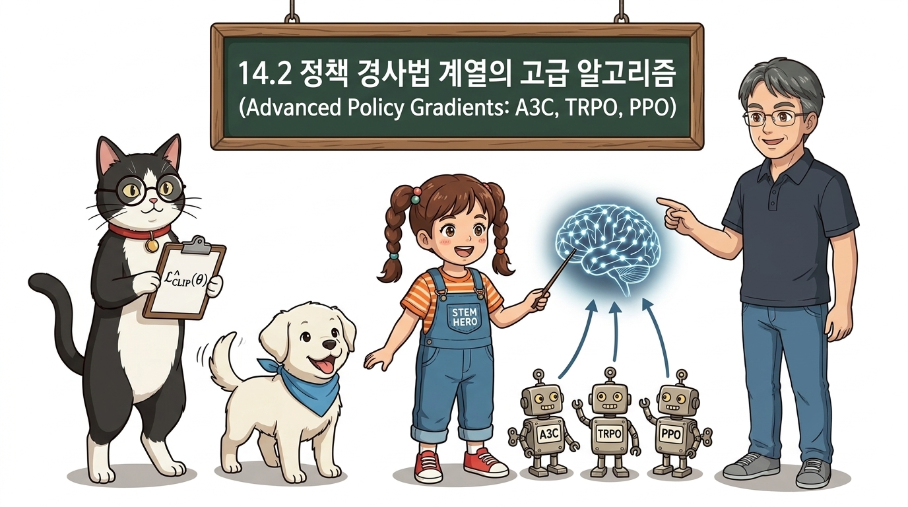
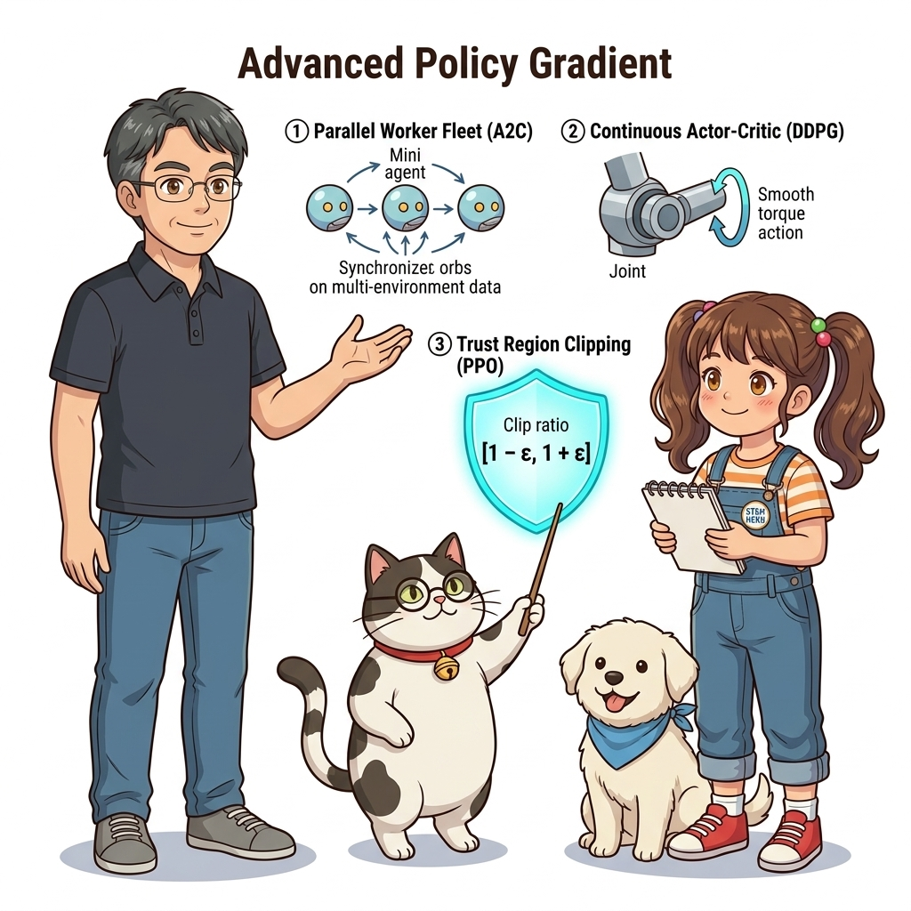
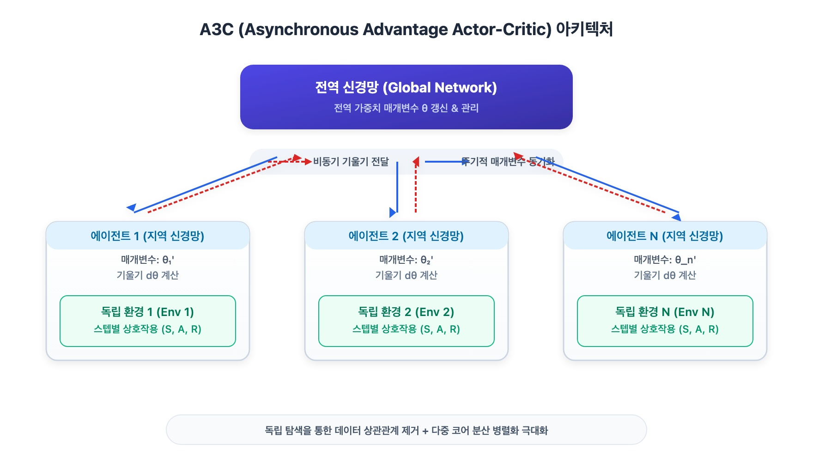
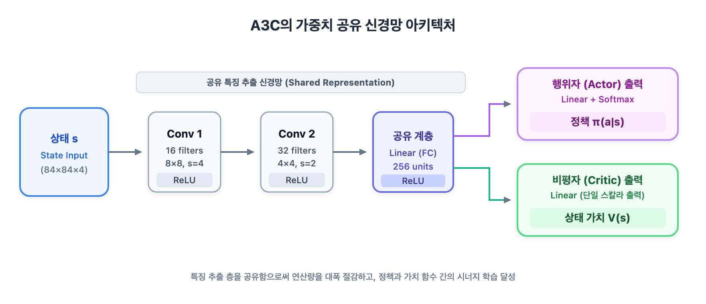
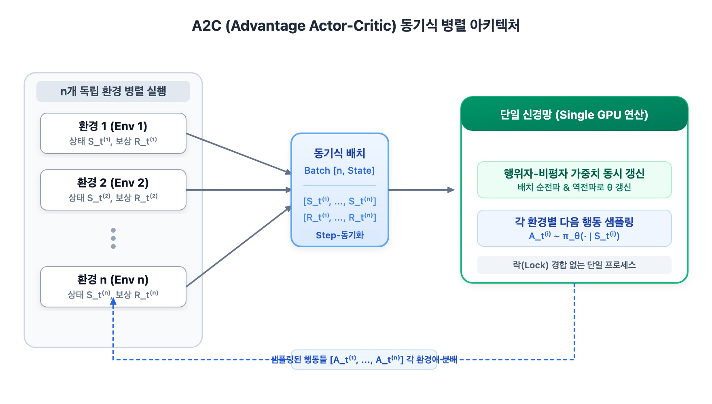
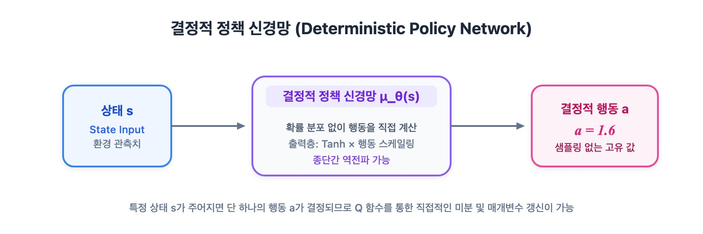
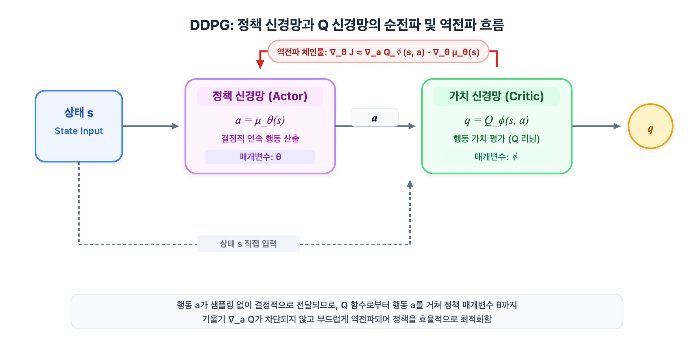

14.2 정책 경사법 계열의 고급 알고리즘
그림 14-3 비동기적으로 분산 학습을 전개하는 A3C/A2C 요원 인형들과 도로시의 학습 지휘선

정책 경사법의 이론적 한계를 보완해 산업 실용화 수준을 비약적으로 끌어올린 심층 강화학습의 주역들을 살펴봅니다. 병렬 시뮬레이션으로 데이터 상관관계를 파괴하는 A3C/A2C, 로봇 제어의 연속 행동 공간을 정복한 DDPG, 안전한 정책 갱신을 보장하여 ChatGPT(RLHF)의 핵심 엔진이 된 TRPO/PPO, 그리고 엔트로피를 극대화하는 SAC까지 도로시, 지니 조교와 함께 비교 분석해 봅시다!
13장에서 배운 기본 정책 경사법과 Actor-Critic은 직관적이고 강력하지만, 실제 복잡한 고차원 환경에서는 샘플 효율성 부족, 하이퍼파라미터 민감성, 급격한 정책 붕괴(Policy Collapse)라는 난관에 직면합니다.
현대 심층 강화학습 연구자들은 이 한계를 극복하기 위해 정책 경사법을 눈부시게 진화시켰습니다. 가장 중요한 세 가지 핵심 발전 축을 집중 탐구해 보겠습니다:
- 병렬 분산 학습 축: A3C, A2C
- 연속 결정론적 제어 축: DDPG, SAC
- 신뢰 영역 및 클리핑 축: TRPO, PPO
그림 14-8 고급 정책 경사법의 3대 발전 기둥: 병렬 환경 동기화(A2C), 연속 모터 토크 제어(DDPG), 신뢰 영역 보호 클리핑(PPO)

14.2.1 A3C와 A2C: 병렬 환경을 통한 데이터 상관관계 파괴
12장의 DQN에서는 연속된 시간의 경험 데이터 간 상관관계(Correlation)를 끊기 위해 거대한 메모리 공간을 차지하는 ‘경험 재생(Experience Replay)’ 버퍼를 필수적으로 사용했습니다. 하지만 경험 재생은 버퍼에 저장된 과거 데이터를 재활용하므로 오직 오프-정책(Off-Policy)에서만 작동하며, 현재의 최신 정책을 직접 평가해야 하는 온-정책(On-Policy) Actor-Critic에는 바로 적용할 수 없습니다.
딥마인드는 2016년, 경험 재생 버퍼 없이도 데이터 상관관계를 완벽하게 파괴하는 혁신적인 해법인 A3C(Asynchronous Advantage Actor-Critic)[23]를 발표했습니다.
1) A3C 아키텍처: 비동기 다중 워커 분산 학습

A3C는 하나의 중앙 전역 신경망(Global Network)과 여러 개의 독립된 CPU 코어에서 실행되는 지역 워커(Local Worker)들로 구성됩니다:
- 각 워커는 서로 다른 시드(Seed)를 가진 독립된 환경 인스턴스에서 독자적으로 행동을 탐색합니다.
- 워커마다 환경 상태가 완전히 제각각이므로, 이들이 수집하는 데이터 사이에는 시간적 상관관계가 완전히 사라집니다.
- 각 워커는 일정 스텝(예: 5스텝) 동안 경험을 모아 그래디언트를 계산한 뒤, 중앙 전역 신경망에 비동기적(Asynchronous)으로 밀어 넣어 파라미터를 갱신합니다.
또한 A3C는 [그림 14-3]처럼 합성곱(CNN) 특징 추출 계층의 가중치를 정책망(π)과 가치망(V)이 공유하는 효율적인 멀티태스크 구조를 확립했습니다.

2) A2C: 동기식 배치 벡터화의 승리
A3C의 비동기 방식은 락(Lock) 없이 자유롭게 파라미터를 갱신하는 장점이 있었지만, 워커가 그래디언트를 전송하는 순간 이미 전역 네트워크의 파라미터가 다른 워커에 의해 변경되어 있는 과거 그래디언트(Stale Gradient) 문제가 존재했습니다.
OpenAI는 이를 개선한 A2C(Advantage Actor-Critic)를 제시했습니다. 첫 번째 ‘A(Asynchronous)’를 떼어내고, 여러 환경의 스텝을 동기식(Synchronous)으로 맞추어 하나의 거대한 미니배치로 묶은 것입니다.

- 모든 병렬 환경에서 시점 t의 상태 St(1), …, St(N)을 동시에 관측합니다.
- 이를 크기 N의 텐서 배치로 만들어 단일 GPU에서 고속 순전파 및 역전파를 수행합니다.
- 실험 결과 A2C는 A3C와 대등하거나 더 우수한 성능을 내면서도, 최신 GPU 텐서 가속을 100% 활용할 수 있어 오늘날 모든 심층 강화학습 라이브러리의 표준 구현체가 되었습니다.
14.2.2 DDPG: 연속 행동 공간의 결정론적 혁명
로봇의 관절 각도 제어나 자율주행 차량의 조향각처럼 행동이 무한한 실수 범위인 환경에서, DQN의 argmax 연산은 불가능에 가깝습니다.
13.5절에서 살펴본 것처럼 가우스 정규분포 N(μ, σ2)에서 행동을 샘플링하는 방법도 있지만, DDPG(Deep Deterministic Policy Gradient)[24]는 행동을 확률적으로 뽑지 않고 결정론적 실수 벡터 a = μθ(s)로 신경망이 직접 출력하도록 설계했습니다.

결정론적 정책 경사 정리와 연쇄 법칙(Chain Rule)
DDPG는 Actor-Critic 아키텍처에 DQN의 경험 재생 버퍼와 타깃 네트워크를 성공적으로 이식했습니다:
- 행위자 (Actor, μθ): 상태 s를 입력받아 연속 행동 a = μθ(s)를 직접 출력
- 비평자 (Critic, Qϕ): 상태 s와 연속 행동 a를 입력받아 스칼라 행동 가치 Qϕ(s, a)를 평가

비평자 Qϕ(s, a)의 출력이 최대화되도록 행위자 μθ(s)를 갱신할 때, 역전파의 연쇄 법칙이 아름답게 적용됩니다:
∇θ J(θ) = E [ ∇a Qϕ(s, a) a = μθ(s) · ∇θ μθ(s) ]
- 비평자 신경망을 통해 “행동 a를 어느 방향으로 수정해야 Q값이 커지는가”라는 기울기 ∇a Q를 먼저 구합니다.
- 이 기울기를 행위자 신경망으로 그대로 흘려보내 행위자의 가중치 θ를 갱신합니다!
max 연산의 소거와 소프트 타깃 갱신
DQN에서는 다음 상태의 최댓값 maxa Q(St+1, a)를 구하기 위해 수많은 후보를 탐색해야 했지만, DDPG에서는 이미 최적 행동을 출력하도록 훈련된 행위자 μθ가 존재하므로 단 한 번의 순전파로 대체됩니다:
maxa Qϕ(s, a) ≈ Qϕ(s, μθ(s))
또한 DDPG는 타깃 네트워크의 가중치를 일정 주기마다 통째로 복사하는 대신, 매 스텝마다 미세한 비율 τ (예: 0.005)만큼 서서히 이동시키는 소프트 타깃 갱신(Soft Target Update)을 도입하여 극도의 학습 안정성을 달성했습니다:
ϕtarget ← τ ϕ + (1 − τ) ϕtarget
[!TIP] SAC (Soft Actor-Critic)로의 도약:
DDPG의 Q값 과대평가 및 하이퍼파라미터 취약성을 해결하기 위해, 현대 연속 제어의 절대 강자로 떠오른 알고리즘이 바로 SAC입니다. SAC는 보상뿐만 아니라 정책의 엔트로피(Entropy, 무작위성)를 함께 최대화하는 최대 엔트로피 강화학습을 적용하여, 탐색 실패에 빠지지 않고 다양한 최적 행동 경로를 스스로 개척합니다.
14.2.3 TRPO와 PPO: 신뢰 영역과 클리핑 대리 손실
일반적인 딥러닝(지도학습)에서는 학습률이 조금 커서 손실 함수가 튀더라도 다음 배치에서 올바른 정답 레이블을 보고 회복할 수 있습니다.
하지만 강화학습에서 한 번의 잘못된 파라미터 갱신으로 정책이 붕괴(Cliff Fall)하면, 망가진 정책이 엉터리 데이터만을 수집하게 되며 영원히 이전 성능으로 돌아오지 못하는 치명적인 악순환이 발생합니다.
이 문제를 해결하기 위해 “새로운 정책이 이전 정책에서 너무 멀리 벗어나지 않도록 안전 범위를 강제하자”라는 신뢰 영역(Trust Region) 개념이 탄생했습니다.
1) TRPO (Trust Region Policy Optimization)
TRPO[25]는 정책을 갱신할 때 이전 정책 πold와 새 정책 π 사이의 확률 분포 차이를 쿨백-라이블러 발산(Kullback-Leibler Divergence, KLD)으로 측정하고, 이 값이 안전 임곗값 δ 이하가 되도록 엄격한 수학적 제약 조건을 부여합니다:
maxθ E [ (πθ(a s) / πθold(a s)) A(s, a) ] s.t. E [ DKL(πθold(· s) πθ(· s)) ] ≤ δ
이 제약 조건 덕분에 정책 성능이 단조 증가(Monotonic Improvement)함을 수학적으로 보장할 수 있었습니다. 하지만 2차 미분인 헤세 행렬(Hessian Matrix)과 켤레 기울기법(Conjugate Gradient)을 연산해야 하므로 계산 비용이 너무 크고 구현이 대단히 복잡했습니다.
2) PPO (Proximal Policy Optimization)
2017년 OpenAI의 존 슐만(John Schulman) 연구팀은 TRPO의 복잡한 2차 제약 최적화를 획기적으로 단순화한 PPO[26]를 발표했습니다.
핵심 아이디어는 이전 정책 대비 새 정책의 확률 비 rt(θ)가 1 근처의 안전 구간 [1 − ϵ, 1 + ϵ]을 벗어나지 못하도록 강제로 잘라내는(Clipping) 것입니다 (보통 ϵ = 0.2 사용).
(식 14.1) PPO 클리핑 목적 함수 (Clipped Surrogate Objective)
LCLIP(θ) = E [ min( rt(θ) At, clip(rt(θ), 1 − ϵ, 1 + ϵ) At ) ]
여기서 확률 변화율 rt(θ) = πθ(at st) / πθold(at st)
- 이점 At > 0 (좋은 행동):
행동 확률을 높여야 하지만, rt(θ)가 1 + ϵ(예: 1.2)을 초과하면 목적 함수가 상수로 묶여 그래디언트가 0이 됩니다. 즉, 한 번에 너무 욕심부려 정책을 급변시키지 못하도록 차단합니다. - 이점 At < 0 (나쁜 행동):
행동 확률을 낮추어야 하지만, rt(θ)가 1 − ϵ(예: 0.8) 밑으로 떨어지면 역시 클리핑되어 과도한 패널티로 인한 정책 붕괴를 예방합니다.
PPO는 1차 미분(일반 역전파)만으로 간단히 구현할 수 있으면서도 TRPO 이상의 뛰어난 성능과 놀라운 학습 안정성을 보여주었습니다. 그 결과 OpenAI Five(도타 2 세계 챔피언 격파), 물리 로봇 손(루빅스 큐브 해결), 그리고 오늘날 ChatGPT를 비롯한 대규모 언어 모델의 인간 피드백 기반 강화학습(RLHF)에 이르기까지 현존하는 가장 성공적인 강화학습 알고리즘의 왕좌를 차지하고 있습니다.